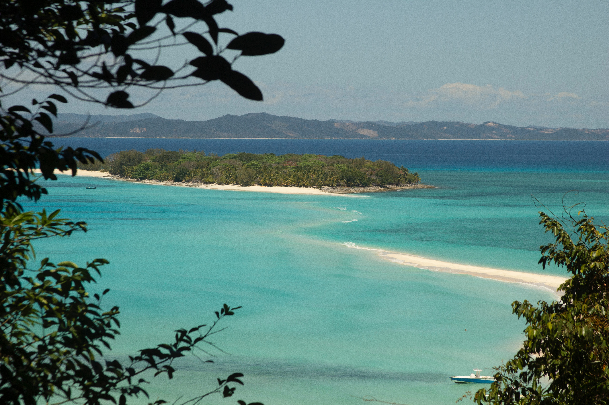
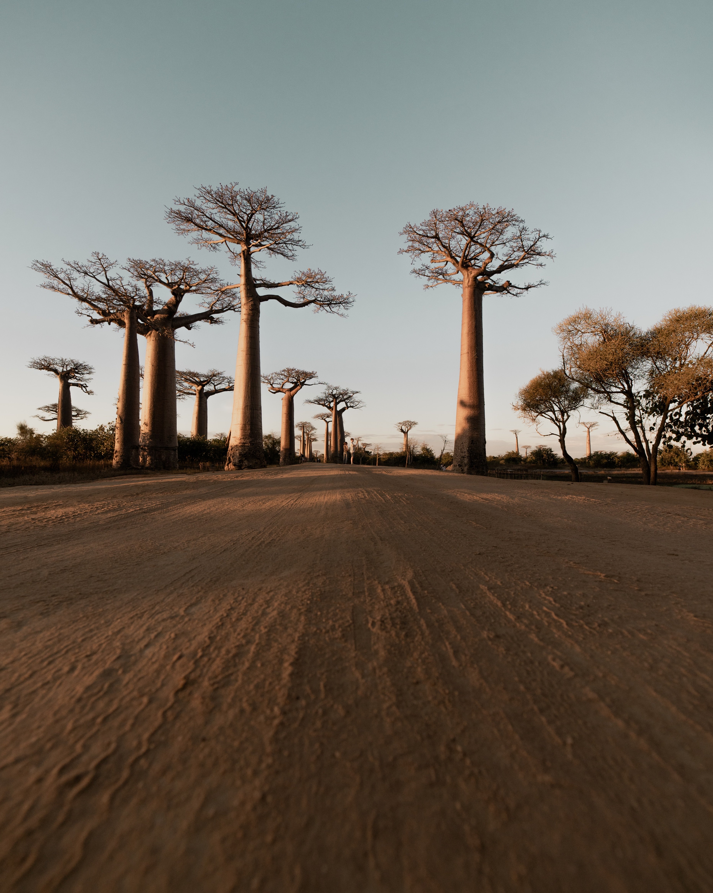
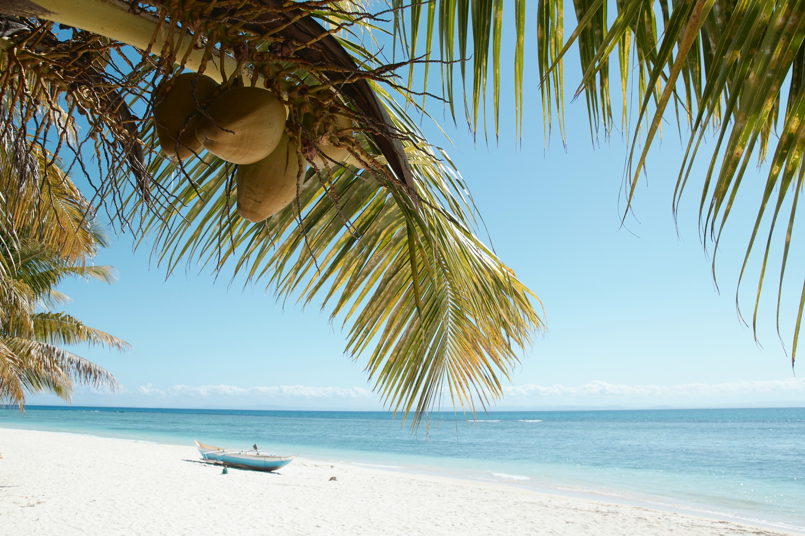
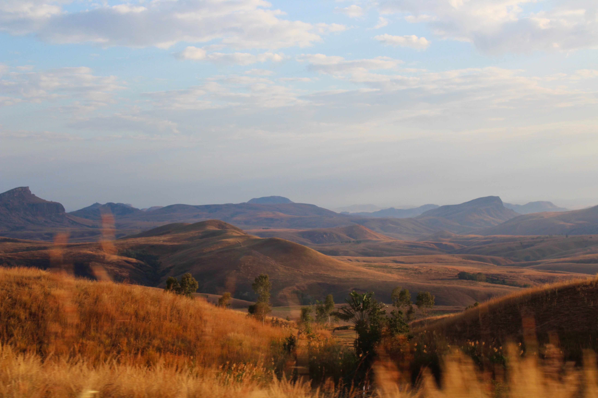
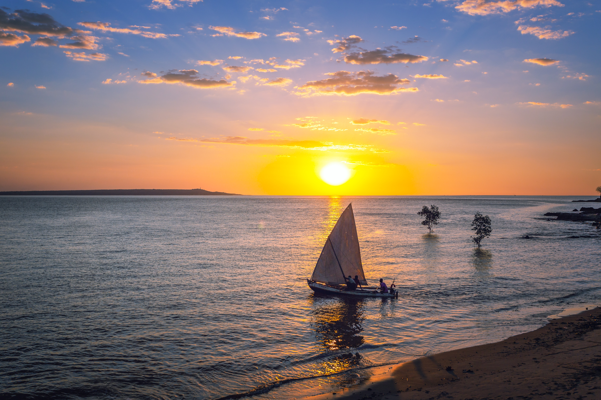
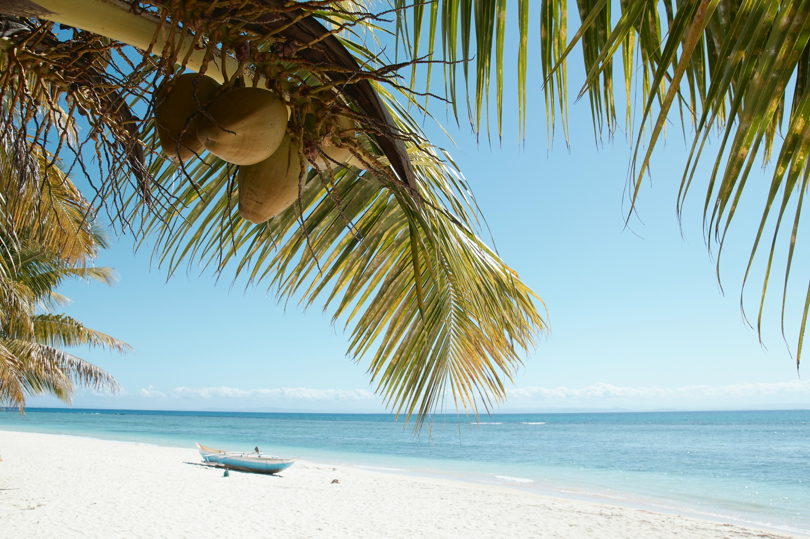
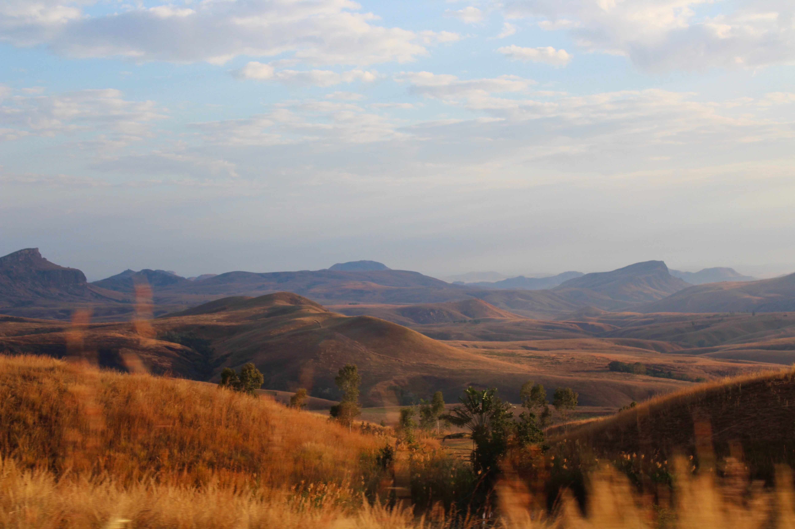
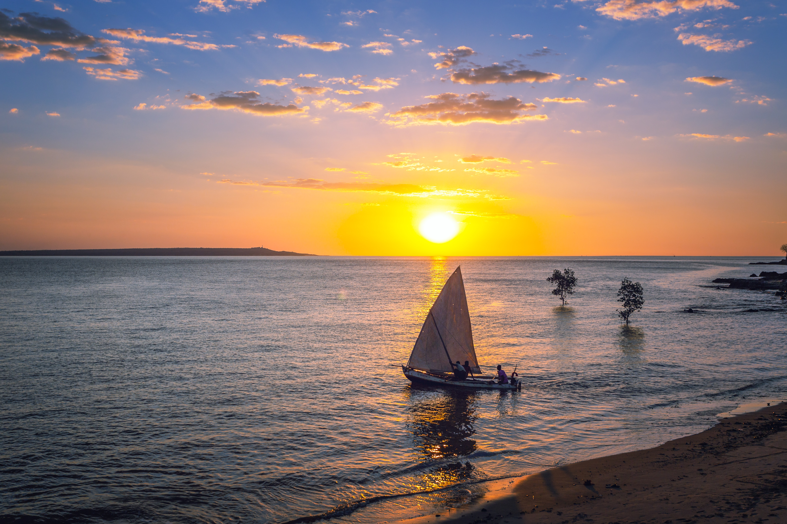

Madagascar, située dans l'océan Indien, est une île magnifique et exotique qui fascine par sa diversité naturelle, culturelle et géographique. Surnommée "l'île rouge" en raison de ses terres fertiles, elle abrite une faune et une flore uniques au monde, notamment les lémuriens, caméléons, et baobabs emblématiques. Sa biodiversité est exceptionnelle, avec une grande variété d'écosystèmes, des plages de sable blanc aux montagnes couvertes de forêts tropicales luxuriantes. Madagascar offre également une richesse culturelle impressionnante, résultat de l'influence de peuples d'origines diverses, tels que les Malgaches, les Arabes, les Indiens, et les Européens. Sa musique, sa danse, et ses coutumes reflètent ce mélange riche de traditions. Les marchés animés, les festivals colorés et la cuisine épicée font partie de l'expérience culturelle unique de Madagascar. En somme, Madagascar est un joyau de l'océan Indien, une destination inoubliable pour les amoureux de la nature et des cultures exotiques.
L'île de Madagascar est un véritable trésor de biodiversité, abritant une variété d'animaux uniques au monde. Les lémuriens, avec leurs grands yeux expressifs et leur comportement social fascinant, dominent les forêts luxuriantes de l'île. Les caméléons panthères, célèbres pour leur capacité à changer de couleur et à se fondre dans leur environnement, ajoutent à l'unicité de la faune malgache. Sur la côte est, les majestueuses baleines à bosse offrent des spectacles époustouflants lors de leur migration annuelle. Ces trois espèces emblématiques reflètent la richesse extraordinaire de la faune de Madagascar, faisant de l'île une destination incontournable pour les amoureux de la nature.
Les paysages de Madagascar sont tout simplement époustouflants et variés, offrant une diversité géographique exceptionnelle. De ses plages de sable blanc bordées par des eaux turquoise à ses forêts tropicales luxuriantes où règnent les lémuriens, l'île est un paradis pour les amoureux de la nature. Les montagnes imposantes, notamment le massif de l'Andringitra, offrent des sommets escarpés, des gorges profondes et des paysages dignes d'une carte postale. Les savanes du sud témoignent de la sécheresse caractéristique de certaines régions, tandis que les rizières en terrasses dans les hautes terres rappellent le patrimoine agricole malgache. Sans oublier les célèbres allées d'avenues de baobabs, dont le célèbre "Allée des Baobabs" près de Morondava est un spectacle à couper le souffle. En somme, Madagascar est un véritable mélange de paysages à couper le souffle, un joyau géographique qui séduit les voyageurs du monde entier.
  




